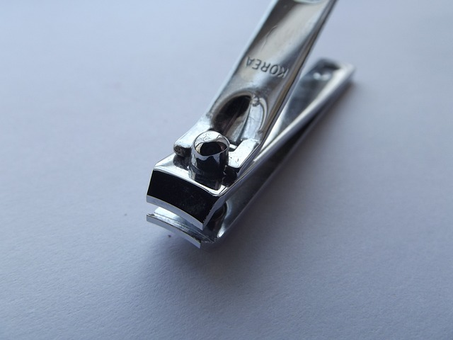

Higiene personal
© 2024 Sitio Web de José Velasco. Todos los derechos reservados
© 2024 Sitio Web de José Velasco. Todos los derechos reservados
Son conjunto de conocimientos y técnicas que aplican los individuos para el control de los factores que ejercen efectos nocivos sobre la salud
Si se tiene una buena higiene personal se pueden prevenir enfermedades estomacales y respiratorias
Lavarse las manos correctamente es la práctica más sencilla e importante que debemos de realizar todas las personas, como hábito de higiene básica para cuidar nuestra salud
El baño diario es una costumbre que se debemos de establecernos. Bañarse elimina la suciedad, el sudor, las células muertas de la piel y los gérmenes que se acumulan en el cuerpo

Debemos usar desodorantes para evitar malos olores o una sudoración. Su uso regular ayuda a mantenernos frescos y con buen olor a lo largo del día
Cepillarnos los dientes antes y después de cada comida. Es esencial para mantener una buena higiene oral y prevenir problemas dentales
Mantener las uñas limpias y cortas de manos y pies.Cuidar tus uñas es una parte importante de la higiene personal y puede contribuir a tu bienestar general
Mantener nuestra ropa y calzado limpia. Mantener tu ropa en buen estado te permite lucir siempre presentable y profesional, lo que puede influir positivamente en tu imagen y confianza